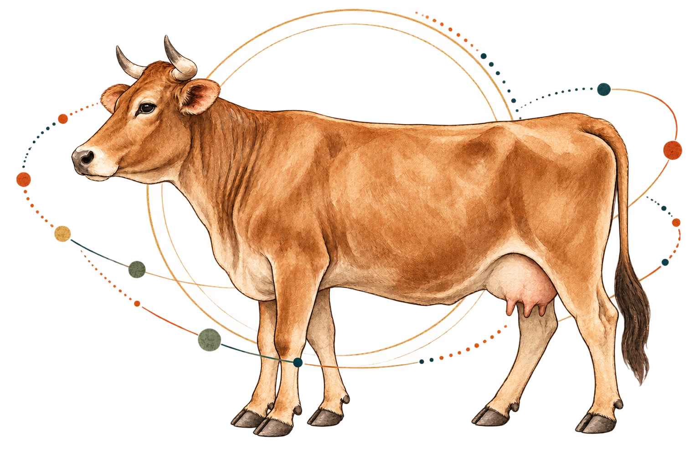

דין נוסף שנכנס לפרק מפני שהוא משלים או מרחיב את הנושא הנדון.
י״ב פרקים · מסע אחד
מה צריך לברר לפני שאוכלים?
מסע חזותי להכרת מבנה מסכת חולין, פרקיה ונושאיה.

לחצו כדי לפתוח את יחידת השאלות
פסוקי התורה שביסוד מסכת חולין
המסכת מרחיבה דינים ומצוות שכבר נזכרו בתורה. לחצו על נושא כדי לקרוא את הפסוק המנוקד.
כשרות ואיסורי מאכל
סימני בעלי חיים טהוריםויקרא י״א, א–ל
- וַיְדַבֵּ֧ר יְהֹוָ֛ה אֶל־מֹשֶׁ֥ה וְאֶֽל־אַהֲרֹ֖ן לֵאמֹ֥ר אֲלֵהֶֽם׃
- דַּבְּר֛וּ אֶל־בְּנֵ֥י יִשְׂרָאֵ֖ל לֵאמֹ֑ר זֹ֤את הַֽחַיָּה֙ אֲשֶׁ֣ר תֹּאכְל֔וּ מִכׇּל־הַבְּהֵמָ֖ה אֲשֶׁ֥ר עַל־הָאָֽרֶץ׃
- כֹּ֣ל מַפְרֶ֣סֶת פַּרְסָ֗ה וְשֹׁסַ֤עַת שֶׁ֙סַע֙ פְּרָסֹ֔ת מַעֲלַ֥ת גֵּרָ֖ה בַּבְּהֵמָ֑ה אֹתָ֖הּ תֹּאכֵֽלוּ׃
- אַ֤ךְ אֶת־זֶה֙ לֹ֣א תֹֽאכְל֔וּ מִֽמַּעֲלֵי֙ הַגֵּרָ֔ה וּמִמַּפְרִסֵ֖י הַפַּרְסָ֑ה אֶֽת־הַ֠גָּמָ֠ל כִּֽי־מַעֲלֵ֨ה גֵרָ֜ה ה֗וּא וּפַרְסָה֙ אֵינֶ֣נּוּ מַפְרִ֔יס טָמֵ֥א ה֖וּא לָכֶֽם׃
- וְאֶת־הַשָּׁפָ֗ן כִּֽי־מַעֲלֵ֤ה גֵרָה֙ ה֔וּא וּפַרְסָ֖ה לֹ֣א יַפְרִ֑יס טָמֵ֥א ה֖וּא לָכֶֽם׃
- וְאֶת־הָאַרְנֶ֗בֶת כִּֽי־מַעֲלַ֤ת גֵּרָה֙ הִ֔וא וּפַרְסָ֖ה לֹ֣א הִפְרִ֑יסָה טְמֵאָ֥ה הִ֖וא לָכֶֽם׃
- וְאֶת־הַ֠חֲזִ֠יר כִּֽי־מַפְרִ֨יס פַּרְסָ֜ה ה֗וּא וְשֹׁסַ֥ע שֶׁ֙סַע֙ פַּרְסָ֔ה וְה֖וּא גֵּרָ֣ה לֹֽא־יִגָּ֑ר טָמֵ֥א ה֖וּא לָכֶֽם׃
- מִבְּשָׂרָם֙ לֹ֣א תֹאכֵ֔לוּ וּבְנִבְלָתָ֖ם לֹ֣א תִגָּ֑עוּ טְמֵאִ֥ים הֵ֖ם לָכֶֽם׃
- אֶת־זֶה֙ תֹּֽאכְל֔וּ מִכֹּ֖ל אֲשֶׁ֣ר בַּמָּ֑יִם כֹּ֣ל אֲשֶׁר־לוֹ֩ סְנַפִּ֨יר וְקַשְׂקֶ֜שֶׂת בַּמַּ֗יִם בַּיַּמִּ֛ים וּבַנְּחָלִ֖ים אֹתָ֥ם תֹּאכֵֽלוּ׃
- וְכֹל֩ אֲשֶׁ֨ר אֵֽין־ל֜וֹ סְנַפִּ֣יר וְקַשְׂקֶ֗שֶׂת בַּיַּמִּים֙ וּבַנְּחָלִ֔ים מִכֹּל֙ שֶׁ֣רֶץ הַמַּ֔יִם וּמִכֹּ֛ל נֶ֥פֶשׁ הַחַיָּ֖ה אֲשֶׁ֣ר בַּמָּ֑יִם שֶׁ֥קֶץ הֵ֖ם לָכֶֽם׃
- וְשֶׁ֖קֶץ יִהְי֣וּ לָכֶ֑ם מִבְּשָׂרָם֙ לֹ֣א תֹאכֵ֔לוּ וְאֶת־נִבְלָתָ֖ם תְּשַׁקֵּֽצוּ׃
- כֹּ֣ל אֲשֶׁ֥ר אֵֽין־ל֛וֹ סְנַפִּ֥יר וְקַשְׂקֶ֖שֶׂת בַּמָּ֑יִם שֶׁ֥קֶץ ה֖וּא לָכֶֽם׃
- וְאֶת־אֵ֙לֶּה֙ תְּשַׁקְּצ֣וּ מִן־הָע֔וֹף לֹ֥א יֵאָכְל֖וּ שֶׁ֣קֶץ הֵ֑ם אֶת־הַנֶּ֙שֶׁר֙ וְאֶת־הַפֶּ֔רֶס וְאֵ֖ת הָעׇזְנִיָּֽה׃
- וְאֶ֨ת־הַדָּאָ֔ה וְאֶת־הָאַיָּ֖ה לְמִינָֽהּ׃
- אֵ֥ת כׇּל־עֹרֵ֖ב לְמִינֽוֹ׃
- וְאֵת֙ בַּ֣ת הַֽיַּעֲנָ֔ה וְאֶת־הַתַּחְמָ֖ס וְאֶת־הַשָּׁ֑חַף וְאֶת־הַנֵּ֖ץ לְמִינֵֽהוּ׃
- וְאֶת־הַכּ֥וֹס וְאֶת־הַשָּׁלָ֖ךְ וְאֶת־הַיַּנְשֽׁוּף׃
- וְאֶת־הַתִּנְשֶׁ֥מֶת וְאֶת־הַקָּאָ֖ת וְאֶת־הָרָחָֽם׃
- וְאֵת֙ הַחֲסִידָ֔ה הָאֲנָפָ֖ה לְמִינָ֑הּ וְאֶת־הַדּוּכִיפַ֖ת וְאֶת־הָעֲטַלֵּֽף׃
- כֹּ֚ל שֶׁ֣רֶץ הָע֔וֹף הַהֹלֵ֖ךְ עַל־אַרְבַּ֑ע שֶׁ֥קֶץ ה֖וּא לָכֶֽם׃
- אַ֤ךְ אֶת־זֶה֙ תֹּֽאכְל֔וּ מִכֹּל֙ שֶׁ֣רֶץ הָע֔וֹף הַהֹלֵ֖ךְ עַל־אַרְבַּ֑ע אֲשֶׁר־[ל֤וֹ] (לא) כְרָעַ֙יִם֙ מִמַּ֣עַל לְרַגְלָ֔יו לְנַתֵּ֥ר בָּהֵ֖ן עַל־הָאָֽרֶץ׃
- אֶת־אֵ֤לֶּה מֵהֶם֙ תֹּאכֵ֔לוּ אֶת־הָֽאַרְבֶּ֣ה לְמִינ֔וֹ וְאֶת־הַסׇּלְעָ֖ם לְמִינֵ֑הוּ וְאֶת־הַחַרְגֹּ֣ל לְמִינֵ֔הוּ וְאֶת־הֶחָגָ֖ב לְמִינֵֽהוּ׃
- וְכֹל֙ שֶׁ֣רֶץ הָע֔וֹף אֲשֶׁר־ל֖וֹ אַרְבַּ֣ע רַגְלָ֑יִם שֶׁ֥קֶץ ה֖וּא לָכֶֽם׃
- וּלְאֵ֖לֶּה תִּטַּמָּ֑אוּ כׇּל־הַנֹּגֵ֥עַ בְּנִבְלָתָ֖ם יִטְמָ֥א עַד־הָעָֽרֶב׃
- וְכׇל־הַנֹּשֵׂ֖א מִנִּבְלָתָ֑ם יְכַבֵּ֥ס בְּגָדָ֖יו וְטָמֵ֥א עַד־הָעָֽרֶב׃
- לְֽכׇל־הַבְּהֵמָ֡ה אֲשֶׁ֣ר הִוא֩ מַפְרֶ֨סֶת פַּרְסָ֜ה וְשֶׁ֣סַע אֵינֶ֣נָּה שֹׁסַ֗עַת וְגֵרָה֙ אֵינֶ֣נָּה מַעֲלָ֔ה טְמֵאִ֥ים הֵ֖ם לָכֶ֑ם כׇּל־הַנֹּגֵ֥עַ בָּהֶ֖ם יִטְמָֽא׃
- וְכֹ֣ל הוֹלֵ֣ךְ עַל־כַּפָּ֗יו בְּכׇל־הַֽחַיָּה֙ הַהֹלֶ֣כֶת עַל־אַרְבַּ֔ע טְמֵאִ֥ים הֵ֖ם לָכֶ֑ם כׇּל־הַנֹּגֵ֥עַ בְּנִבְלָתָ֖ם יִטְמָ֥א עַד־הָעָֽרֶב׃
- וְהַנֹּשֵׂא֙ אֶת־נִבְלָתָ֔ם יְכַבֵּ֥ס בְּגָדָ֖יו וְטָמֵ֣א עַד־הָעָ֑רֶב טְמֵאִ֥ים הֵ֖מָּה לָכֶם׃
- וְזֶ֤ה לָכֶם֙ הַטָּמֵ֔א בַּשֶּׁ֖רֶץ הַשֹּׁרֵ֣ץ עַל־הָאָ֑רֶץ הַחֹ֥לֶד וְהָעַכְבָּ֖ר וְהַצָּ֥ב לְמִינֵֽהוּ׃
- וְהָאֲנָקָ֥ה וְהַכֹּ֖חַ וְהַלְּטָאָ֑ה וְהַחֹ֖מֶט וְהַתִּנְשָֽׁמֶת׃
איסור טרפהשמות כ״ב, ל
וְאַנְשֵׁי־קֹ֖דֶשׁ תִּהְי֣וּן לִ֑י וּבָשָׂ֨ר בַּשָּׂדֶ֤ה טְרֵפָה֙ לֹ֣א תֹאכֵ֔לוּ לַכֶּ֖לֶב תַּשְׁלִכ֥וּן אֹתֽוֹ׃
למקור המלא בספריאאיסור גיד הנשהבראשית ל״ב, ל״ג
עַל־כֵּ֡ן לֹֽא־יֹאכְל֨וּ בְנֵֽי־יִשְׂרָאֵ֜ל אֶת־גִּ֣יד הַנָּשֶׁ֗ה אֲשֶׁר֙ עַל־כַּ֣ף הַיָּרֵ֔ךְ עַ֖ד הַיּ֣וֹם הַזֶּ֑ה כִּ֤י נָגַע֙ בְּכַף־יֶ֣רֶךְ יַעֲקֹ֔ב בְּגִ֖יד הַנָּשֶֽׁה׃
למקור המלא בספריאאיסור בשר בְּחָלָבשמות כ״ג, י״ט
רֵאשִׁ֗ית בִּכּוּרֵי֙ אַדְמָ֣תְךָ֔ תָּבִ֕יא בֵּ֖ית יְהֹוָ֣ה אֱלֹהֶ֑יךָ לֹֽא־תְבַשֵּׁ֥ל גְּדִ֖י בַּחֲלֵ֥ב אִמּֽוֹ׃
למקור המלא בספריאאיסור אכילת דםויקרא ג׳, י״ז
חֻקַּ֤ת עוֹלָם֙ לְדֹרֹ֣תֵיכֶ֔ם בְּכֹ֖ל מוֹשְׁבֹֽתֵיכֶ֑ם כׇּל־חֵ֥לֶב וְכׇל־דָּ֖ם לֹ֥א תֹאכֵֽלוּ׃
למקור המלא בספריאאיסור אכילת חֵלֶבויקרא ז׳, כ״ג
דַּבֵּ֛ר אֶל־בְּנֵ֥י יִשְׂרָאֵ֖ל לֵאמֹ֑ר כׇּל־חֵ֜לֶב שׁ֥וֹר וְכֶ֛שֶׂב וָעֵ֖ז לֹ֥א תֹאכֵֽלוּ׃
למקור המלא בספריאאיסור אבר מן החידברים י״ב, כ״ג
רַ֣ק חֲזַ֗ק לְבִלְתִּי֙ אֲכֹ֣ל הַדָּ֔ם כִּ֥י הַדָּ֖ם ה֣וּא הַנָּ֑פֶשׁ וְלֹא־תֹאכַ֥ל הַנֶּ֖פֶשׁ עִם־הַבָּשָֽׂר׃
למקור המלא בספריאמצוות הקשורות לבעלי חיים
איסור אותו ואת בנוויקרא כ״ב, כ״ח
וְשׁ֖וֹר אוֹ־שֶׂ֑ה אֹת֣וֹ וְאֶת־בְּנ֔וֹ לֹ֥א תִשְׁחֲט֖וּ בְּי֥וֹם אֶחָֽד׃
למקור המלא בספריאמצוות כיסוי הדםויקרא י״ז, י״ג
וְאִ֨ישׁ אִ֜ישׁ מִבְּנֵ֣י יִשְׂרָאֵ֗ל וּמִן־הַגֵּר֙ הַגָּ֣ר בְּתוֹכָ֔ם אֲשֶׁ֨ר יָצ֜וּד צֵ֥יד חַיָּ֛ה אוֹ־ע֖וֹף אֲשֶׁ֣ר יֵאָכֵ֑ל וְשָׁפַךְ֙ אֶת־דָּמ֔וֹ וְכִסָּ֖הוּ בֶּעָפָֽר׃
למקור המלא בספריאמתנות כהונה: זרוע, לחיים וקבהדברים י״ח, ג׳
וְזֶ֡ה יִהְיֶה֩ מִשְׁפַּ֨ט הַכֹּהֲנִ֜ים מֵאֵ֣ת הָעָ֗ם מֵאֵ֛ת זֹבְחֵ֥י הַזֶּ֖בַח אִם־שׁ֣וֹר אִם־שֶׂ֑ה וְנָתַן֙ לַכֹּהֵ֔ן הַזְּרֹ֥עַ וְהַלְּחָיַ֖יִם וְהַקֵּבָֽה׃
למקור המלא בספריאמצוות ראשית הגזדברים י״ח, ד׳
רֵאשִׁ֨ית דְּגָֽנְךָ֜ תִּירֹשְׁךָ֣ וְיִצְהָרֶ֗ךָ וְרֵאשִׁ֛ית גֵּ֥ז צֹאנְךָ֖ תִּתֶּן־לֽוֹ׃
למקור המלא בספריאמצוות שילוח הקןדברים כ״ב, ו׳–ז׳
כִּ֣י יִקָּרֵ֣א קַן־צִפּ֣וֹר לְפָנֶ֡יךָ בַּדֶּ֜רֶךְ בְּכׇל־עֵ֣ץ אוֹ עַל־הָאָ֗רֶץ אֶפְרֹחִים֙ אוֹ בֵיצִ֔ים וְהָאֵ֤ם רֹבֶ֙צֶת֙ עַל־הָֽאֶפְרֹחִ֔ים אוֹ עַל־הַבֵּיצִ֑ים לֹא־תִקַּ֥ח הָאֵ֖ם עַל־הַבָּנִֽים׃
שַׁלֵּ֤חַ תְּשַׁלַּח֙ אֶת־הָאֵ֔ם וְאֶת־הַבָּנִ֖ים תִּֽקַּֽח־לָ֑ךְ לְמַ֙עַן֙ יִ֣יטַב לָ֔ךְ וְהַאֲרַכְתָּ֖ יָמִֽים׃
למקור המלא בספריאטומאה וטהרה
טומאת אוכליםויקרא י״א, ל״ד
מִכׇּל־הָאֹ֜כֶל אֲשֶׁ֣ר יֵאָכֵ֗ל אֲשֶׁ֨ר יָב֥וֹא עָלָ֛יו מַ֖יִם יִטְמָ֑א וְכׇל־מַשְׁקֶה֙ אֲשֶׁ֣ר יִשָּׁתֶ֔ה בְּכׇל־כְּלִ֖י יִטְמָֽא׃
למקור המלא בספריאנוסח הפסוקים המנוקד: ספריא, מקרא על פי המסורה.
מן הבהמה אל האכילה
השאלות שנפתחו מובילות תחילה אל הכשרת הבהמה, ומשם אל מה שנשאר אסור או שנדרש לתת ממנה.
-
הכנת הבהמה לאכילה
מי רשאי לשחוט, מהי שחיטה כשרה, ומתי הבהמה אינה ראויה לאכילה.
- אחרי השחיטה
-
איסורים בבשר שנשחט
גם בשר שנשחט כראוי עשוי לכלול חלקים אסורים או לעורר את שאלת בשר בחלב.
- מן האכילה אל האחריות
-
חלקים הניתנים לכהנים
מן הבהמה ומן הצמר ניתנות מתנות, והאכילה מקבלת גם ממד של נתינה.
השלב הבא נראה כיצד הנושאים האלה נפרשים לאורך שנים־עשר פרקי המסכת.
אותו רצף, עכשיו בתוך המסכת
מן הנושאים אל הפרקים
שלושת הנושאים הראשיים מתפתחים לקבוצות של פרקים. ביניהם חוזרת שאלת הטומאה והטהרה, והמסכת נחתמת במצווה נוספת בבעלי חיים.
הכנת הבהמה לאכילה
פרקים א–גטומאה וטהרה
פרק דאיסורים בבשר שנשחט
פרקים ה–חטומאה וטהרה
פרק טחלקים הניתנים לכהנים
פרקים י–י״אמצווה נוספת בבעלי חיים
פרק י״בלחצו על פרק במפה כדי לפתוח את משניותיו ואת הנושאים שהגמרא מרחיבה.
כיצד בנוי פרק בגמרא?
המשנה מניחה את התשתית, והגמרא בונה סביבה שכבות של פירוש, דיון ותוספת.
המשנה במרכז
בירור המשנה
הרחבת האמוראים
המשנהנקודת המוצא של הפרק
מי התנא?
מה מקור הדין?
מה טעם הדין?
מהם גבולות הדין?
מדוע המשנה התנסחה כך?
האם ניתן היה לקצר?
הלכות שלא הוזכרו בביאור המשנהמעגל רחב יותר
מחלוקות שלא הוזכרו בביאור המשנההרחבה נוספת
שאלות שלא נזכרו בביאור המשנהמעבר למשנה
סיפור, דרשה או רעיון שנקשרים לחכם שנזכר או לעולם התוכן של הדיון.
פרק בגמרא
משנה א
מוקד הדיון הראשון
בירור 1 · הרחבה 2 · הסתעפות 10משנה ב
מוקד הדיון השני
בירור 6 · הרחבה 3 · הסתעפות 1משנה ג
מוקד הדיון השלישי
בירור 2 · הרחבה 1 · הסתעפות 2משנה ד
מוקד הדיון הרביעי
בירור 4 · הרחבה 6 · הסתעפות 3משנה ה
מוקד הדיון החמישי
בירור 1 · הרחבה 1 · הסתעפות 1משנה ו
מוקד הדיון השישי
בירור 2 · הרחבה 3 · הסתעפות 7בירור המשנההרחבותהסתעפויות
כל משנה פותחת מוקד דיון, אך היקף הבירור, ההרחבות וההסתעפויות משתנה ממוקד למוקד. מכל המוקדים יחד נבנה הפרק בגמרא. הכמויות באיור להמחשה בלבד.
הדגמה להתפתחות סוגיה: פרק כל הבשר
מתחילים ברצף המשניות, מתמקדים במקור אחד ועוקבים אחר המעבר מביאור ישיר לנושא מתרחב.
משנה א׳
כָּל הַבָּשָׂר אָסוּר לְבַשֵּׁל בְּחָלָב, חוּץ מִבְּשַׂר דָּגִים וַחֲגָבִים. וְאָסוּר לְהַעֲלוֹתוֹ עִם הַגְּבִינָה עַל הַשֻּׁלְחָן, חוּץ מִבְּשַׂר דָּגִים וַחֲגָבִים. הַנּוֹדֵר מִן הַבָּשָׂר, מֻתָּר בִּבְשַׂר דָּגִים וַחֲגָבִים. הָעוֹף עוֹלֶה עִם הַגְּבִינָה עַל הַשֻּׁלְחָן וְאֵינוֹ נֶאֱכָל, דִּבְרֵי בֵית שַׁמַּאי. וּבֵית הִלֵּל אוֹמְרִים, לֹא עוֹלֶה וְלֹא נֶאֱכָל. אָמַר רַבִּי יוֹסֵי, זוֹ מִקֻּלֵּי בֵית שַׁמַּאי וּמֵחֻמְרֵי בֵית הִלֵּל. בְּאֵיזֶה שֻׁלְחָן אָמְרוּ, בַּשֻּׁלְחָן שֶׁאוֹכֵל עָלָיו. אֲבָל בַּשֻּׁלְחָן שֶׁסּוֹדֵר עָלָיו אֶת הַתַּבְשִׁיל, נוֹתֵן זֶה בְצַד זֶה וְאֵינוֹ חוֹשֵׁשׁ:
מהו הבשר שנאסר?
ובחלקה השני: האם מותר להעלות עוף וגבינה יחד על השולחן?
משנה ב׳
צוֹרֵר אָדָם בָּשָׂר וּגְבִינָה בְּמִטְפַּחַת אַחַת, וּבִלְבַד שֶׁלֹּא יְהוּ נוֹגְעִין זֶה בָזֶה. רַבָּן שִׁמְעוֹן בֶּן גַּמְלִיאֵל אוֹמֵר, שְׁנֵי אַכְסְנָאִין אוֹכְלִין עַל שֻׁלְחָן אֶחָד, זֶה בָּשָׂר וָזֶה גְּבִינָה, וְאֵין חוֹשְׁשִׁין:
הנחת בשר וגבינה בסמיכות
מגע בין המאכלים ואכילת בשר וגבינה על שולחן אחד.
משנה ג׳
טִפַּת חָלָב שֶׁנָּפְלָה עַל הַחֲתִיכָה, אִם יֶשׁ בָּהּ בְּנוֹתֵן טַעַם בְּאוֹתָהּ חֲתִיכָה, אָסוּר. נִעֵר אֶת הַקְּדֵרָה, אִם יֶשׁ בָּהּ בְּנוֹתֵן טַעַם בְּאוֹתָהּ קְדֵרָה, אָסוּר. הַכְּחָל, קוֹרְעוֹ וּמוֹצִיא אֶת חֲלָבוֹ. לֹא קְרָעוֹ, אֵינוֹ עוֹבֵר עָלָיו. הַלֵּב, קוֹרְעוֹ וּמוֹצִיא אֶת דָּמוֹ. לֹא קְרָעוֹ, אֵינוֹ עוֹבֵר עָלָיו. הַמַּעֲלֶה אֶת הָעוֹף עִם הַגְּבִינָה עַל הַשֻּׁלְחָן, אֵינוֹ עוֹבֵר בְּלֹא תַעֲשֶׂה:
מה דין חלב שנשפך לבשר?
טיפת חלב שנפלה על חתיכת בשר והתפשטות הטעם בתבשיל.
העלאת עוף על שולחן עם גבינה
זום אל משנה א׳ · החלק השניהָעוֹף עוֹלֶה עִם הַגְּבִינָה עַל הַשֻּׁלְחָן וְאֵינוֹ נֶאֱכָל, דִּבְרֵי בֵית שַׁמַּאי. וּבֵית הִלֵּל אוֹמְרִים, לֹא עוֹלֶה וְלֹא נֶאֱכָל. אָמַר רַבִּי יוֹסֵי, זוֹ מִקֻּלֵּי בֵית שַׁמַּאי וּמֵחֻמְרֵי בֵית הִלֵּל. בְּאֵיזֶה שֻׁלְחָן אָמְרוּ, בַּשֻּׁלְחָן שֶׁאוֹכֵל עָלָיו. אֲבָל בַּשֻּׁלְחָן שֶׁסּוֹדֵר עָלָיו אֶת הַתַּבְשִׁיל, נוֹתֵן זֶה בְצַד זֶה וְאֵינוֹ חוֹשֵׁשׁ:
משאלת קינוח הפה עוברים לנטילת ידיים בין בשר לחלב
מכאן מתרחבת הגמרא לדיני מים ראשונים ואחרונים
דיני מים ראשונים ואחרונים
נושא מתרחבנושאי רוחב לאורך המסכת
בתוך הדיון המקומי נפתחים נושאים גדולים. הם אינם פרק בפני עצמו, אבל הם יוצרים רשת המחברת חלקים רחוקים במסכת.
עולם האגדה במסכת
כל 21 הסוגיות שסומנו במפורש בתוכן האתר בסוג „אגדה” — ללא סיווגים או תוספות חדשות.
לא נמצאו סוגיות בפרק זה.
מפת המסע השלמה
בכל תחנה מופיעים מספר הסוגיות הכולל, מספר סוגיות האגדה ונושאי הרוחב של הפרק. לחצו על פרק כדי לראות את רשימת הנושאים המלאה, לרבות הנושאים שבאו בדרך אגב.
12פרקים
141דפים
713סוגיות סך הכול
21סוגיות אגדה
143סוגיות דרך אגב
מסלול לימוד
סוגיות יסוד באיסור והיתר
לימוד מסכת חולין יכול לשמש מבוא ממוקד לשלושה תחומים מרכזיים באיסור והיתר. המפה מפנה אל הנושאים הראשיים המתאימים בכל פרק.
בשר בחלב
פרק כל הבשר
נושא ראשי 1: בשר בחלב — היקף האיסור והפרדה
נושא ראשי 3: הנחת בשר וגבינה בסמיכות
נושא ראשי 4: בשר שהתבשל עם חלב
נושא ראשי 7: בשר בחלב — הבשר והחלב שנאסרו
נושא ראשי 8: קיבת בהמה והפורש ממנה
מליחה
פרק כל הבשר
נושא ראשי 6: בליעה ופליטה בבשר — דם וטעם
תערובות
פרק גיד הנשה — נושא ראשי 6: איסור שנתן טעם בהיתר
פרק כל הבשר — נושא ראשי 4: בשר שהתבשל עם חלב